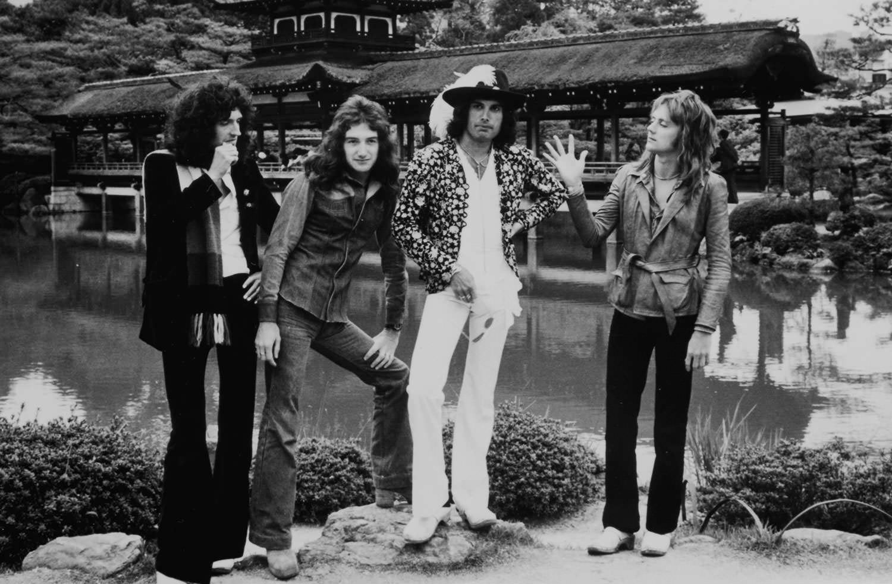
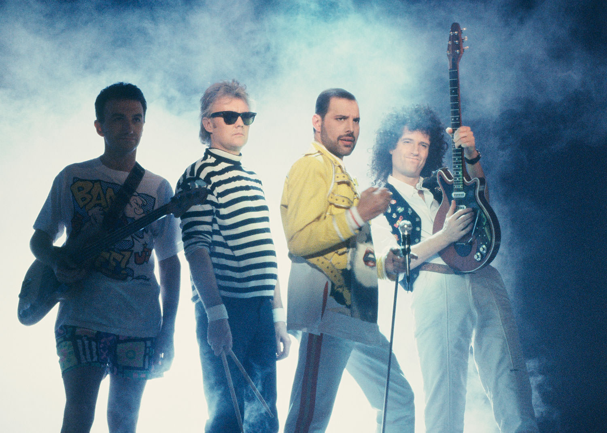

Brian May, CBE, PhD, FRAS is a founding member of Queen, a world-renowned guitarist, songwriter, producer and performer, also a Doctor of Astrophysics, 3D stereoscopic photographic authority, campaigner for animal rights and a passionate advocate for political and social change.
Queen’s accolades accrued over five decades include a staggering list of sales with a catalogue that consistently tops popularity polls, along with a deserved list of awards and honours. Brian has penned 22 Queen top 20 hits, among them the powerful ballads ‘Who Wants to Live Forever’, ‘No-One But You’ and ‘Save Me’, along with anthems ‘The Show Must Go On’, ‘I Want It All’, and ‘We Will Rock You’, namesake to the Queen/Ben Elton hit musical which enjoyed an unprecedented 12 year run at London’s Dominion Theatre alongside numerous worldwide productions. Iconic sports anthem, ‘We Will Rock You’ was performed live by Brian and Roger during the London 2012 Olympics closing ceremony, viewed by an estimated one billion TV audience. Other memorable global live appearances include the band’s 1985 Live Aid show stealing set and during the 2002 Golden Jubilee celebrations, Brian playing his own arrangement of ‘God Save the Queen’ from the rooftop of Buckingham Palace.
Queen became the first rock group to score a major film, Flash Gordon, followed by definitive music for Highlander. Brian’s personal credits include further film, TV and theatre collaborations and two successful solo albums earning him two Ivor Novello awards. He continues to inspire a diverse genre of international artists and has a wealth of guest artist appearances featuring his distinctive guitar style, produced from his revered homemade ‘Red Special’ guitar using a sixpence as a plectrum.
A Queen and Paul Rodgers joint performance at the 2004 induction into the UK Music Hall of Fame led to a return to touring after a 20 year break, featuring the former Free/Bad Company singer as guest vocalist. 2012 saw a return of Queen onstage, this time with current guest vocalist Adam Lambert, to award winning universal critical acclaim. Over 70 worldwide sold out concerts have been played, including a spectacular New Years Eve concert heralding 2015, broadcast live by the BBC.
Most recently Brian has enjoyed writing, producing, recording and touring with Kerry Ellis. Brian and Kerry are currently working on their third album and have a series of European concert dates confirmed for early 2016 after which he returns to tour with Queen + Adam Lambert headlining the Isle of Wight Festival along with a dozen further European festival appearances.
Brian retains his keen passion for Astronomy and after a 30 year break returned to Astrophysics to update his doctoral thesis on the Motions of Interplanetary Dust and achieved his full PhD degree from Imperial College, London, in 2007. He continues his work in Astronomy and in July 2015 Brian spent time with fellow Astrophysicists at NASA Headquarters interpreting new data as it was transmitted from the Pluto New Horizons probe whilst compiling the first high-quality stereo image of Pluto.
Brian has co-authored numerous publications, including two in the Astronomy field with the late Sir Patrick Moore. He now heads his own publishing house, The London Stereoscopic Company which specializes in Victorian 3-D Photography. All books come complete with Brian’s own design OWL stereoscopic viewer. More information on the upcoming published work Crinoline: Fashion’s Most Magnificent Disaster (Spring 2016) and the celebrated short animated film ‘One Night in Hell’ along with all matters stereoscopic are available at Brian’s dedicated website, www.londonstereo.com.
Brian is proud to be an ambassador for the Mercury Phoenix Trust, set up in memory of Freddie Mercury to support AIDS projects. Over 700 projects and millions of people have benefitted from the Trust as the global battle against HIV/AIDS continues.
A lifelong advocate of animal welfare, Brian is a leading inspiration in the fight against fox hunting, trophy hunting and badger culling. He campaigns tirelessly from grass roots through to parliamentary level with his Save Me Trust campaign, established in 2009 to champion British wildlife, working alongside Harper Asprey Wildlife Rescue and rehabilitation centre. Projects include rejuvenation of ancient woodlands to create protected wildlife habitats and as a key player working alongside the major conservation and wildlife NGOs, the Save Me Trust created Team Fox and Team Badger - the largest ever wildlife coalition. Further details can be found at www.savemetrust.org. The Save Me Trust is currently fronting a petition calling for the introduction of Cecil’s Law inspired by the death of Cecil, South Africa’s most famous lion, and to end the senseless slaughter of our magnificent wildlife creatures.
Brian was appointed Commander of the Order of the British Empire in 2005 for ‘services to the Music Industry and for his charity work’ and is patron to a number of charities, also a vice-president of the RSPCA.